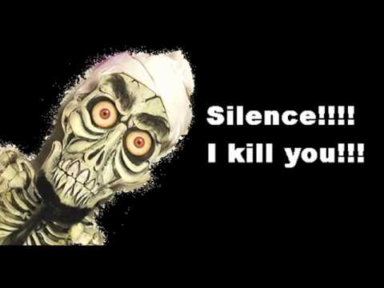
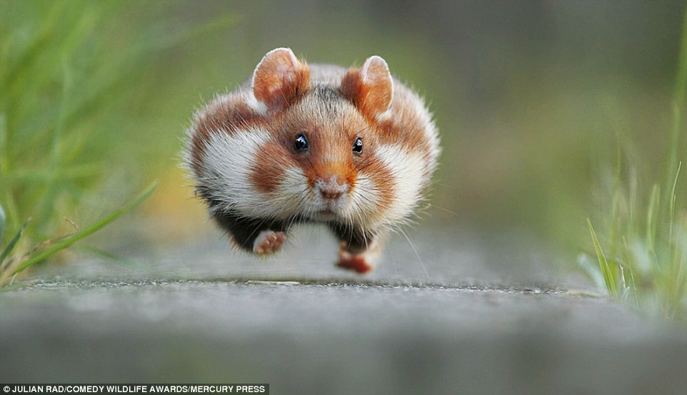
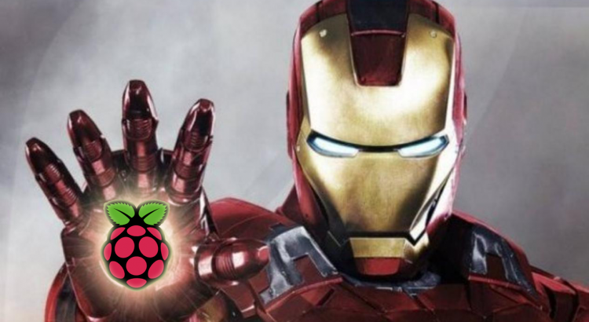
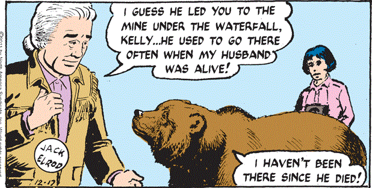
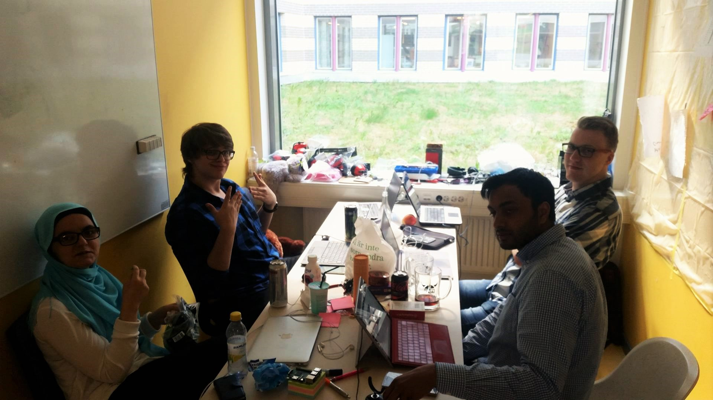
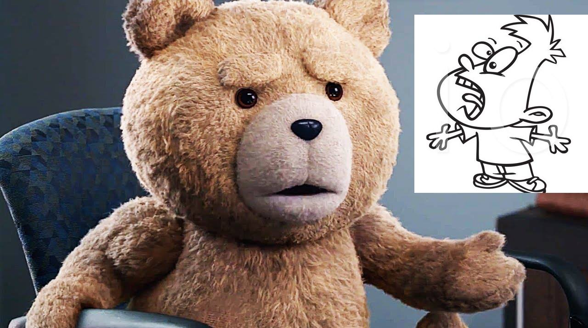
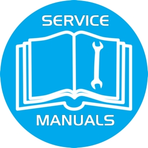

Nyheter
Dag 17 - När nallen tystnar

En mycket spännande dag där både Akash och Nora var nära på att uppvisa sina frustrationer på Oscar respektive Gustaf (vilket var lite synd). Dagen började med att alla fick leka med Eliza, en psykoterapist till chatbot, där alla vi gruppmedlemmar fick berätta om våra känslor och inre frustrationer.
En bra början på sprinten då flera smarta lösningar om kommando med röststyrningen gjordes med bland annat keyword:en "Barett" och "silence". Men frustration väcktes då vi fastnade på den mute:ade fasen och ingen kunde få Barett att prata igen. Mot slutet så får vi ändå till det och vi får en mycket välförtjänad helg!
Lite justeringar/debugging på koden och ljudinspelningar förväntas inför nästa vecka. Vi ber ännu en dag till hårdvaruGuden att bevaka vårt projekt.
/Kemin
Dag 16 - Andra andningen

Nu är vi inne på sista sprinten! Vårt mål är att björnen ska kunna ha väldigt grundläggande konversationer med användaren. Vi märkte att många av våra programmerade röstfunktioner följde enkla skript som kunde kännas fel i många sammanhang om björnen uppfatta användaren fel. Hela gruppen fick som läxa att analysera Eliza, en semi-intelligent psykoterapist, som gav vaga, mer generella svar till användaren. Styrkan av detta är att användaren sällan kan bli förolämpad av ett olämpligt svar som inte passar sammanhanget. Man ger istället ett allmänt svar som är multifunktionell och helst inte dömande.
/Slackash
Dag 15

Idag hade vi vår demo för vår tredje sprint. Vi presenterade vår dragkedja, den mjukare och mycket effektivare kramen samt lite av vår tidiga implementation av röststyrning. Vi har mycket debugging kvar på röststyrningen men kunde i alla fall visa upp att den kunde förstå några nyckelord samt reagera med en egenskapad modul för en av nyckelorden.
/Brettan
Dag 14

Igår så fick vi den att börja lyssna på ord, EUREKA! Alla jobbade på olika ord, både med att stoppa in de fonetiskt i björnen men även med att skapa reaktionära program till dem. Hela gruppen tampades med att micarna aldrig ville lyssna och att de hörde alldeles knasiga ord och allt möjligt. Tillslut tog gruppen bort näst intill alla ord som den kunde identifiera och stoppade in sina egna så att den skulle sluta hitta allt möjligt. Dock visade det sig fortfarande omöjligt att jobba med då det var ouppnåeligt att få hela gruppen tyst så det var möjligt att det var därför den bara skrev ut ord lite hejsan svejsan! Till slut fick gruppen den att reagera på nästan alla nyckelord så vi är helt preppade för sprinten imorgon!
/Hammer time
Dag 13 - Jasper, staph!

Idag så har allt fokus gått till att få Jasper att förstå vad vi säger med varierande framgång(but but it it). Mot slutet av dagen så börjar den dock lära sig lite och Baretthype train är på räls igen.
Dagens citat
Var är dickfilen? - Temin 2016
/Dickfilerna
Dag 12 - Snoozing

Men en glänsande start på sprinten och alla stories som inte hörde till Listen var i princip klara. Vi sydde på dragkedja på ryggen så att man kan stänga björnen utan besvär.
Vi(Akash) tog även en backup innan Akash(vi) bestämde sig för att korruptera minneskortet så vi behövde bara återställa från en väldigt färsk kopia! #ajabajaAkash(oss)
Med en långhelg på horisonten så gick vissa av oss(Oskar) hem tidigt medans de andra satt kvar länge. #stillbetterthanOscar
/The vacation crew
Dag 11 - Ny sprint

Eftersom vi hade haft vår sprint planning meeting dagen innan så började vi dagen direkt med att dela upp denna sprints stories till mindre tasks innan vi hade scrum meeting. Under dagen så fixade vi redan en av våra sex stories som är att kramen ska ha mjukare rörelser. Vi har även lyckats spela in ljud via vår webbkamera. Anledningen till att vi har en webbkamera istället för en mic är för att vi behöver något med ett eget ljudkort då RPi:n saknar detta och då är en billig webbkamera billigare än en mic. Vi har inte hunnit med så mycket mer än detta förutom lite uppdateringar på hemsidan då vi även har haft föreläsningar idag.
/Temins ålder
Dag 10 - GLOOOORRY
Idag var det dags för vår andra demo, likt förra gången så jobbade vi ända in i kaklet. Vi fick den nya trycksensorn så vi började testa koden tillsammans med sensorn.
Under demo:t så häpnade vi klassen men björnens rappa kramrörelse och förtrollande röst! Vi fick besvara på många intressanta frågor om hur björnen fungerar och dennes framtid.
På eftermiddagen så hade vi vår sprint retroactive där vi hade mestadels positiva saker att säga men till nästa sprint ska vi försöka ha lite mer offline programmering (inte direkt på RPi) och ha med risker på vår scrum board. Efter mötet så överraskade Fredrik oss med ett besök och undrade om vi kunde ha sprintplanning nu istället för på morgonen när sprinten börjar.
/The hugging machines
Dag 9

Idag brände vi sönder en av våra FSR (Force Sensing Resistor). Helgen innan demo:t...
Då de flesta av våra stories direkt eller indirekt krävde att FSR:en funkade så fick vi dra in nya user stories in till vår sprint.
Vi började arbeta med en "service manual" och köpte in en webbkamera med mikrofon.
/Toodles Barett
Dag 8 - Stepping up

På morgonen när vi prövade att sätta in vårt skal med motorerna fastmonterade i björnen vilket gjorde den mycket mindre kramgo. Oskar och Temin började då bygga på en mindre låda som inte stack ut lika mycket i sidorna. Under tiden så pillade Gustaf med vår avstängningsknapp och fixade buggen som gjorde att shutdown-scriptet kördes. Oscar och Akash började skriva huvudkoden som ser till att alla sensorer, motorer etc körs samtidigt.
Under eftermiddagen så stoppade vi in allting i björnen och körde med den i ca en halvtimme för att kolla om det blir för varmt vilket den inte blev.
/Spindelmannen Oskar
Dag 7 - Craftsmanship
Idag har vi satt dit en knapp som stänger av enheten så att man inte behöver dra av elen och riskera att SD-kortet blir korrupt. Vi har även byggt ett skal där RPi:n och kretskortet, som nu har löts fast, får plats i och har hål för att olika sladdar ska komma in och ut. Förhoppningsvis köper vi en powerbank ikväll eller imorgon så kan vi stoppa in allting i björnen!
/The care bears
Dag 6 - Fresh start

Idag så har vi haft vårat andra sprint meeting där vi tog fram vad vi skulle göra under den kommande veckan. Efter det så delade vi upp våra user stories i mindre tasks, detta är något som vi är mycket bättre på nu än förra veckan! Vi har även flyttat på våran scrum board så att den är mer åtkomlig för alla i gruppen.
Nu har vi fått björnen att spela upp en ljudfil när den blir klappad på huvudet men vi upptäckte att när trycksensorn används så går en kärna i RPi:n upp i 100% användning vilket vi ska titta in i under morgondagen.
/Baretts
Dag 5 - D-day

På morgonen innan demo:t så prövade vi koden för FSR och armarna som fungerade felfritt! Däremot så fick vi inte den andra touchsensorn att fungera och så kunde vi inte löda dit alla sladdar till ett kretskort. Vi var ganska nöjda med sprinten även om PO inte var lika glad som vi över några lösningar.
Under eftermiddagen så utvärderade vi sprinten för att se vad som var och vad som var dåligt.
Tagga sprint två imorgon!
/BB-8
Dag 4 - sorgens dag

Delarna har kommit(Huzzah!) och vi kan äntligen jobba hårdare med dom andra delarna till roboten. Vi delar in oss i olika grupper och jobbar på bra. Vid 12-tiden så märker vi att RPin är väldigt varm och vi bestämmer oss för att ta lunch så att den kan svalna. När vi kommer tillbaka vill den inte starta. Förhoppningsvis så har vi inte stekt Akashs RPi och att en säkring har gått, då borde den funka igen om ett par dagar. Två av oss gick och köpte en ny som vi sedan ska ha i björnen undertidens som resten av gruppen försökte ta reda på vad som hade gått snett.
Den höga moralen och modet försvann, gruppen kände sig lite osäkra och inte mycket blev gjort. Efter ett litet tag så prövade vi vår force touch sensor med stor framgång. Nu fungerar de olika delarna men nu måste dom fungera i symbios och åka in i björnen.
/Heeeest
Dag 3
Delarna har inte kommit än så vi bygger vidare på armen. Under förmiddagen fick vi våran första breakthrough så vi fick ljudet att spelas ur våran högtalare som vi sedan stoppade in i huvudet på björnen. Mitt på dagen så fick vi äntligen våra servomotorer att fungera och under eftermiddagen så fick vi även motorerna att göra som vi ville så vi satte på armarna. Vi prövade även att stoppa in armarna i björnen men stor framgång!
/Framgångssagan Barett
Dag 2

Några user stories är nu färdiga och komponenterna är på väg till oss!
Oskar och Oscar har åkt och köpt delar till armarna och ett motorkontroll chip så att vi inte dödar våran Raspberry pi. Undertiden så har resten av gruppen har läst på, designat olika komponenter och prövat lite olika kopplingar med scripts till Raspberry pi:n.
På eftermiddagen så har vi gemensamt försöka lista ut hur vi ska koppla dom olika delarna till Raspberryn. Tack vare detta så har vi börjat lista ut hur servomotorerna ska kopplas för att vi inte ska förstöra några komponenter. #smallsteps
Syns imorgon /Barettbear-8
Dag 1

Idag så fick vi vårat arbetsrum för de kommande veckorna och plastade in dom för att kunna ha en scrum board. Vi har köpt massvis med olika komponenter och en mysig björn att stoppa in allt i. Några av komponenterna behövdes dock köpas online och kommer inte förens i slutet av sprinten vilket ger oss lite smått panik över vårat sprint goal(;_;), med lite tur och skicklighet så kommer vi nog klara av det ändå. #dontstopbeliving
Vi bestämde att hjärnan i våran björn kommer vara en Raspberry pi, vilken modell det blir beror delvis på hur lätt det är att få tag i den.
/The Baretts
Nu är vi igång!
Målet med sprinten är att björnen ska röra på armarna när man kramar honom!